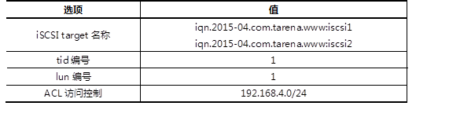

本案例要求先搭建好一台iSCSI服务器，并将整个磁盘共享给客户端：
然后客户机挂载iSCSI服务器共享的磁盘：
使用2台RHEL6虚拟机，其中一台作为iSCSI服务器（192.168.4.5）、另外一台作为测试用的Linux客户机（192.168.4.205），如图-1所示。
图-1
在RHEL6系统中，默认通过scsi-target-utils软件包提供iSCSI服务，因此需要在服务端安装scsi-target-utils包并配置对应的服务，iSCSI服务主要配置选项如表-1所示。
表－1 iSCSI配置选项列表
客户端挂载iSCSI服务器：
实现此案例需要按照如下步骤进行。
步骤一：安装iSCSI服务器软件
1）使用yum安装scsi-target-utils软件包
[root@svr5 ~]# yum -y install scsi-target-utils .. .. [root@svr5 ~]# rpm -q scsi-target-utils scsi-target-utils-1.0.24-10.el6.x86_64
2）启用target服务，并设为开机自动运行
[root@svr5 ~]# service tgtd start ; chkconfig tgtd on Starting SCSI target daemon: [ OK ]
tgtd服务默认通过TCP 3260端口监听客户端请求：
[root@svr5 ~]# netstat -anptu | grep tgtd tcp 0 0 0.0.0.0:3260 0.0.0.0:* LISTEN 2737/tgtd
步骤二：创建逻辑卷
1）为新建磁盘/dev/sdb创建分区
[root@svr5 ~]# parted /dev/sdb mklabel gpt [root@svr5 ~]# parted /dev/sdb mkpart primary 1 1000 [root@svr5 ~]# parted /dev/sdb mkpart primary 1000 2000
2）创建逻辑卷
[root@svr5 ~]# pvcreate /dev/sdb{1,2}
[root@svr5 ~]# vgcreate myvg /dev/sdb{1,2}
[root@svr5 ~]# lvcreate -n iscsi1 –L 800M myvg
[root@svr5 ~]# lvcreate -n iscsi2 –L 800M myvg
[root@svr5 ~]# lvscan
步骤三：通过命令行配置iSCSI服务
1）创建target
[root@svr5 ~]# tgtadm --lld iscsi --op new --mode \ > target --tid 1 -T iqn.2015-04.com.tarena.www:iscsi1
2）为target导入本地磁盘
[root@svr5 ~]# tgtadm --lld iscsi --op new --mode \ >logicalunit --tid 1 --lun 1 -b /dev/myvg/iscsi1
3)配置ACL
[root@svr5 ~]# tgtadm --lld iscsi --op bind --mode \ > target --tid 1 -I 192.168.4.0/24
4)将以上三条命令加入开机启动文件
[root@svr5 ~]# vim /etc/rc.local .. .. tgtadm --lld iscsi --op new --mode target --tid 1 -T iqn.2015-04.com.tarena.www:iscsi1 tgtadm --lld iscsi --op new --mode logicalunit --tid 1 --lun 1 -b /dev/myvg/iscsi1 tgtadm --lld iscsi --op bind --mode target --tid 1 -I 192.168.4.0/24
步骤四：通过配置文件实现iSCSI服务
1）修改配置文件
[root@svr5 ~]# vim /etc/tgt/targets.conf
<target iqn.2015-04.com.tarena.www:iscsi2 >
# List of files to export as LUNs
backing-store /dev/myvg/iscsi2 //定义存储设备
initiator-address 192.168.4.0/24 //定义ACL
</target>
2）重启计算机，验证服务是否开机有效
[root@svr5 ~]# reboot
步骤四：客户端访问
1）客户端安装软件
[root@pc205 ~]# yum -y install iscsi-initiator-utils
2）客户端探测服务器共享
[root@pc205 ~]# iscsiadm -m discovery -t sendtargets -p 192.168.4.5:3260
3）客户端挂载iSCSI共享
[root@pc205 ~]# iscsiadm -m node -T \ >iqn.2015-04.com.tarena.www:iscsi1 \ >-p 192.168.4.5:3260 –l [root@pc205 ~]# iscsiadm -m node -T \ >iqn.2015-04.com.tarena.www:iscsi2 \ >-p 192.168.4.5:3260 –l
4）分区、格式化、挂载
[root@pc205 ~]# fdisk –cul //查看挂载的iSCSI共享盘 [root@pc205 ~]# parted /dev/sdb mklabel gpt [root@pc205 ~]# parted /dev/sdb mkpart primary 1 800 [root@pc205 ~]# parted /dev/sdc mklabel gpt [root@pc205 ~]# parted /dev/sdc mkpart primary 1 800 [root@pc205 ~]# mount /dev/sdb1 /mnt
编写udev规则，实现以下目标：
对于Linux kernel 2.6及更新的操作系统版本udev是系统的设备管理器，udev会分析sysfs的数据，并根据自己的udev规则，实现如下功能：
udev默认规则存放在/etc/udev/rules.d目录下，通过修改次目录下的规则实现设备的命名、属性、链接文件等。
Udev规则文件，常见指令操作符如表-2所示。
表－2 udev常见指令操作符
udev常用替代变量：
实现此案例需要按照如下步骤进行。
步骤一：编写udev规则
1）查看设备属性
[root@svr5 ~]# udevadm monitor –property [root@svr5 ~]# udevadm info --query=path –name=/dev/sdb [root@svr5 ~]# udevadm info --query=property --path=/block/sdb
2）编写udev规则文件
[root@svr5 ~]# vim /etc/udev/rules.d/70-usb.rules
SUBSYSTEM=="block",ENV{DEVTYPE}="disk",KERNEL=="sdb",ENV{ID_VENDOR}=="TOSHIBA",SYMLINK="udisk",RUN+="/usr/bin/wall udisk plugged in"
SUBSYSTEM=="block",ACTION=="add",KERNEL=="sdb[0-9]",ENV{ID_VENDOR_ID}=="0930",ENV{DEVTYPE}=="partition",NAME="udisk%n"
步骤二：添加设备测试结果
点击VMware“虚拟机“菜单，在”可移动设备“菜单下，找到自己的U盘设备，点击”连接“与”断开“，测试自己的udev规则是否成功。
利用NFS机制发布2个共享目录，要求如下：
从客户机访问NFS共享：
使用2台RHEL6虚拟机，其中一台作为NFS共享服务器（192.168.4.5）、另外一台作为测试用的Linux客户机（192.168.4.205），如图-7所示。
图-7
NFS共享的配置文件：/etc/exports 。
配置记录格式：文件夹路径 客户地址1(控制参数.. ..) 客户地址2(.. ..) 。
实现此案例需要按照如下步骤进行。
步骤一：配置NFS服务器，发布指定的共享
1）确认服务端程序、准备共享目录
软件包nfs-utils用来提供NFS共享服务及相关工具，而软件包rpcbind用来提供RPC协议的支持，这两个包在RHEL6系统中一般都是默认安装的：
[root@svr5 ~]# rpm -q nfs-utils rpcbind nfs-utils-1.2.3-39.el6.x86_64 rpcbind-0.2.0-11.el6.x86_64
根据本例的要求，需要作为NFS共享发布的有/root、/usr/src这两个目录：
[root@svr5 ~]# ls -ld /root /usr/src/ dr-xr-x---. 35 root root 4096 1月 15 18:52 /root drwxrwxr-x+ 4 root root 4096 1月 15 17:35 /usr/src/
2）修改/etc/exports文件，添加共享目录设置
默认情况下，来自NFS客户端的root用户会被降权，若要保留其root权限，注意应添加no_root_squash控制参数；另外，限制只读的参数为ro、可读可写为rw，相关配置操作如下所示：
[root@svr5 ~]# vim /etc/exports /root 192.168.4.205(rw,no_root_squash) /usr/src 192.168.4.0/24(ro)
3）启动NFS共享相关服务，确认共享列表
依次启动rpcbiind、nfs服务：
[root@svr5 ~]# service rpcbind restart ; chkconfig rpcbind on 停止 rpcbind： [确定] 正在启动 rpcbind： [确定] [root@svr5 ~]# service nfs restart ; chkconfig nfs on .. .. 启动 NFS 服务： [确定] 关掉 NFS 配额： [确定] 启动 NFS mountd： [确定] 启动 NFS 守护进程： [确定] 正在启动 RPC idmapd： [确定]
使用showmount命令查看本机发布的NFS共享列表：
[root@svr5 ~]# showmount -e localhost Export list for localhost: /usr/src 192.168.4.0/24 /root 192.168.4.205
步骤二：从客户机访问NFS共享
1）启用NFS共享支持服务
客户机访问NFS共享也需要rpcbind服务的支持，需确保此服务已开启：
[root@pc205 ~]# service rpcbind restart ; chkconfig rpcbind on 停止 rpcbind： [确定] 正在启动 rpcbind： [确定]
2）查看服务器提供的NFS共享列表
[root@pc205 ~]# showmount -e 192.168.4.5 Export list for 192.168.4.5: /usr/src 192.168.4.0/24 /root 192.168.4.205
3）从客户机192.168.4.205访问两个NFS共享，并验证权限
将远程的NFS共享/root挂载到本地的/root5文件夹，并验证可读可写：
[root@pc205 ~]# mkdir /root5 //建立挂载点 [root@pc205 ~]# mount 192.168.4.5:/root /root5 //挂载NFS共享目录 [root@pc205 ~]# df -hT /root5 //确认挂载结果 Filesystem Type Size Used Avail Use% Mounted on 192.168.4.5:/root nfs 50G 15G 33G 31% /root5 [root@pc205 ~]# cd /root5 //切换到挂载点 [root@pc205 root5]# echo "NFS Write Test" > pc205.txt //测试写入文件 [root@pc205 root5]# cat pc205.txt //测试查看文件 NFS Write Test
将远程的NFS共享/usr/src挂载到本地的/mnt/nfsdir，并验证只读：
[root@pc205 ~]# mkdir /mnt/nfsdir //建立挂载点 [root@pc205 ~]# mount 192.168.4.5:/usr/src /mnt/nfsdir/ //挂载NFS共享目录 [root@pc205 ~]# df -hT /mnt/nfsdir/ //确认挂载结果 Filesystem Type Size Used Avail Use% Mounted on 192.168.4.5:/usr/src nfs 50G 15G 33G 31% /mnt/nfsdir [root@pc205 ~]# cd /mnt/nfsdir/ //切换到挂载点 [root@pc205 nfsdir]# ls //读取目录列表 debug install.log kernels test.txt [root@pc205 nfsdir]# echo "Write Test." > pc205.txt //尝试写入文件失败 -bash: pc205.txt: 只读文件系统
！！！！ 如果从未授权的客户机访问NFS共享，将会被拒绝。比如从NFS服务器本机尝试访问自己发布的/root共享（只允许192.168.4.205访问），结果如下所示：
[root@svr5 ~]# mkdir /root5 [root@svr5 ~]# mount 192.168.4.5:/root /root5 mount.nfs: access denied by server while mounting 192.168.4.5:/root
4）为NFS共享/usr/src添加触发挂载
要求的触发挂载点为/misc/nfsdir，其中/misc为autofs服务默认监控的文件夹，只需修改/etc/auto.misc文件，添加nfsdir的挂载设置即可：
[root@pc205 ~]# vim /etc/auto.misc .. .. nfsdir -fstype=nfs,ro 192.168.4.5:/usr/src
确保重载autofs服务：
[root@pc205 ~]# service autofs restart ; chkconfig autofs on 停止 automount： [确定] 正在启动 automount： [确定]
然后ls检查预期的挂载点，应该显示远程NFS共享/usr/src目录的内容，表示针对此NFS共享的触发挂载设置成功：
[root@pc205 ~]# ls /misc/nfsdir //查看以触发挂载操作 debug install.log kernels test.txt [root@pc205 ~]# df -hT /misc/nfsdir/ //确认触发结果 Filesystem Type Size Used Avail Use% Mounted on 192.168.4.5:/usr/src nfs 50G 15G 33G 31% /misc/nfsdir
通过Multipath，实现以下目标：
配置2台虚拟机，每台虚拟机均为三块网卡：
实现此案例需要按照如下步骤进行。
步骤一：存储节点上添加额外的磁盘
使用VMware软件新建（或修改）虚拟机，为虚拟机额外添加一块硬盘。
步骤二：存储节点上安装并配置共享存储
1）安装target软件
打开命令行终端，执行以下命令：
[root@storage ~]# vim /etc/tgt/targets.conf
添加以下内容：
<target iqn.2016-05.cn.tedu.storage>
backing-store /dev/sdb1
initiator-address 192.168.1.10
initiator-address 192.168.2.10
</target>
2）启动服务并查看结果
[root@storage ~]# service tgtd start
[root@storage ~]# chkconfig tgtd on
[root@storage ~]# tgt-admin -s
Target 1: iqn.2016-05.cn.tedu.storage
System information:
Driver: iscsi
State: ready
I_T nexus information:
LUN information:
LUN: 0
Type: controller
SCSI ID: IET 00010000
SCSI SN: beaf10
Size: 0 MB, Block size: 1
Online: Yes
Removable media: No
Prevent removal: No
Readonly: No
Backing store type: null
Backing store path: None
Backing store flags:
LUN: 1
Type: disk
SCSI ID: IET 00010001
SCSI SN: beaf11
Size: 2147 MB, Block size: 512
Online: Yes
Removable media: No
Prevent removal: No
Readonly: No
Backing store type: rdwr
Backing store path: /dev/sdb1
Backing store flags:
Account information:
ACL information:
192.168.1.10
192.168.2.10
注意以上的输出，正确的结果必须有LUN1，它记录的是共享磁盘信息。下面的ACL指的是该共享存储允许哪些应用服务器使用。
步骤三：在应用服务器上安装并配置iSCSI客户端
1）安装客户端软件
[root@srv0 yum.repos.d]# yum list | grep iscsi iscsi-initiator-utils.x86_64 6.2.0.873-14.el6 Server [root@srv0 yum.repos.d]# yum install -y iscsi-initiator-utils
2）发现存储服务器的共享磁盘
因为有两条链路都可以连接到共享存储，所以需要在两条链路上都发现它。
[root@srv0 桌面]# iscsiadm --mode discoverydb --type sendtargets --portal 192.168.1.20 --discover 正在启动 iscsid： [确定] 192.168.1.20:3260,1 iqn.2016-05.cn.tedu.storage [root@srv0 桌面]# iscsiadm --mode discoverydb --type sendtargets --portal 192.168.2.20 --discover 192.168.2.20:3260,1 iqn.2016-05.cn.tedu.storage [root@srv0 桌面]#
3）登陆共享存储
只需要将iscsi服务重启就可以自动登陆。在login之前，只能看到本地的存储，登陆之后，将会多出两块新的硬盘。
[root@srv0 ~]# lsblk NAME MAJ:MIN RM SIZE RO TYPE MOUNTPOINT sda 8:0 0 200G 0 disk ├─sda1 8:1 0 500M 0 part /boot └─sda2 8:2 0 199.5G 0 part ├─VolGroup-lv_root (dm-0) 253:0 0 50G 0 lvm / ├─VolGroup-lv_swap (dm-1) 253:1 0 3.9G 0 lvm [SWAP] └─VolGroup-lv_home (dm-2) 253:2 0 145.6G 0 lvm /home sr0 11:0 1 3.6G 0 rom /media/cdrom [root@srv0 ~]# service iscsi restart 停止 iscsi： [确定] 正在启动 iscsi： [确定] [root@srv0 ~]# lsblk NAME MAJ:MIN RM SIZE RO TYPE MOUNTPOINT sda 8:0 0 200G 0 disk ├─sda1 8:1 0 500M 0 part /boot └─sda2 8:2 0 199.5G 0 part ├─VolGroup-lv_root (dm-0) 253:0 0 50G 0 lvm / ├─VolGroup-lv_swap (dm-1) 253:1 0 3.9G 0 lvm [SWAP] └─VolGroup-lv_home (dm-2) 253:2 0 145.6G 0 lvm /home sr0 11:0 1 3.6G 0 rom /media/cdrom sdb 8:16 0 2G 0 disk sdc 8:32 0 2G 0 disk [root@srv0 ~]#
4）设置开机自启动
iscsi用于自动login远程存储，iscsid是守护进程。
[root@srv0 ~]# chkconfig iscsid on [root@srv0 ~]# chkconfig iscsi on
步骤四：配置Multipath多路径
1）安装多路径软件包
[root@srv0 ~]# yum list | grep multipath device-mapper-multipath.x86_64 0.4.9-87.el6 Server device-mapper-multipath-libs.i686 0.4.9-87.el6 Server device-mapper-multipath-libs.x86_64 0.4.9-87.el6 Server [root@srv0 ~]# yum install -y device-mapper-multipath
2）生成配置文件
[root@srv0 ~]# mpathconf --user_friendly_names n
此处的选项是不使用系统默认的命名方法，共享存储在生产环境下很有可能是多台应用服务器共同使用。如果使用系统默认命名方法，每台应用服务器为共享存储起的名字不一定相同，这将给管理员带来很大的使用上的不便。关闭系统默认命名方法，共享存储的名字由管理员手工指定。
3）获取wwid
登陆共享存储后，系统多了两块硬盘，这两块硬盘实际上是同一个存储设备。应用服务器使用哪个都可以，但是如果使用sdb时，sdb对应的链路出现故障，它不会自动切换到sdc。
为了能够实现系统自动选择使用哪条链路，需要将这两块磁盘绑定为一个名称。通过磁盘的wwid来判定哪些磁盘是相同的。
取得一块磁盘wwid的方法如下：
[root@srv0 ~]# scsi_id --whitelisted --device=/dev/sdb 1IET 00010001 [root@srv0 ~]#
4）修改配置文件
首先声明获取wwid的方法：
[root@srv0 ~]# vim /etc/multipath.conf
defaults {
user_friendly_names no
getuid_callout "/lib/udev/scsi_id --whitelisted --device=/dev/%n"
}
然后在文件的最后加入多路径声明，如果哪个存储设备的wwid和第（3）步获取的wwid一样，那么，为其取一个别名，叫mpatha。
multipaths {
multipath {
wwid "1IET 00010001"
alias mpatha
}
}
步骤五：启用Multipath多路径，并测试
1）启动Multipath，并设置为开机启动
[root@srv0 ~]# service multipathd start 正在启动守护进程multipathd： [确定] [root@srv0 ~]# chkconfig multipathd on
2）检查多路径设备文件
如果多路长设置成功，那么将在/dev/mapper下面生成名为mpatha的设备文件：
[root@srv0 ~]# ls /dev/mapper/ control mpatha VolGroup-lv_home VolGroup-lv_root VolGroup-lv_swap
3）对多路径设备文件执行分区、格式化、挂载操作
[root@srv0 ~]# fdisk -cu /dev/mapper/mpatha
Device contains neither a valid DOS partition table, nor Sun, SGI or OSF disklabel
Building a new DOS disklabel with disk identifier 0x205c887e.
Changes will remain in memory only, until you decide to write them.
After that, of course, the previous content won't be recoverable.
Warning: invalid flag 0x0000 of partition table 4 will be corrected by w(rite)
Command (m for help): n ＃创建分区
Command action
e extended
p primary partition (1-4)
p ＃分区类型为主分区
Partition number (1-4): 1 ＃分区编号为1
First sector (2048-4194303, default 2048): ＃起始扇区回车
Using default value 2048
Last sector, +sectors or +size{K,M,G} (2048-4194303, default 4194303): ＃回车
Using default value 4194303
Command (m for help): w ＃保存并退出
The partition table has been altered!
Calling ioctl() to re-read partition table.
新的分区名称应该是/dev/mapper/mpathap1，如果该文件不存在，则执行以下命令进行配置的重新载入：
[root@srv0 ~]# partprobe ; multipath -rr Warning: WARNING: the kernel failed to re-read the partition table on /dev/sda (设备或资源忙). As a result, it may not reflect all of your changes until after reboot. Warning: 无法以读写方式打开 /dev/sr0 (只读文件系统)。/dev/sr0 已按照只读方式打开。 Warning: 无法以读写方式打开 /dev/sr0 (只读文件系统)。/dev/sr0 已按照只读方式打开。 Warning: 无法以读写方式打开 /dev/sr0 (只读文件系统)。/dev/sr0 已按照只读方式打开。 Warning: WARNING: the kernel failed to re-read the partition table on /dev/sr0 (无效的参数). As a result, it may not reflect all of your changes until after reboot. reload: mpatha (1IET 00010001) undef IET,VIRTUAL-DISK size=2.0G features='0' hwhandler='0' wp=undef |-+- policy='round-robin 0' prio=1 status=undef | `- 34:0:0:1 sdb 8:16 active ready running `-+- policy='round-robin 0' prio=1 status=undef `- 33:0:0:1 sdc 8:32 active ready running [root@srv0 ~]# ls /dev/mapper/ ＃再次查看，将会看到新的分区 control mpatha mpathap1 VolGroup-lv_home VolGroup-lv_root VolGroup-lv_swap [root@srv0 ~]#
创建目录并挂载：
[root@srv0 ~]# mkfs.ext4 /dev/mapper/mpathap1 [root@srv0 ~]# mkdir /data [root@srv0 ~]# mount /dev/mapper/mpathap1 /data/ [root@srv0 ~]# df -h /data/ Filesystem Size Used Avail Use% Mounted on /dev/mapper/mpathap1 2.0G 3.0M 1.9G 1% /data